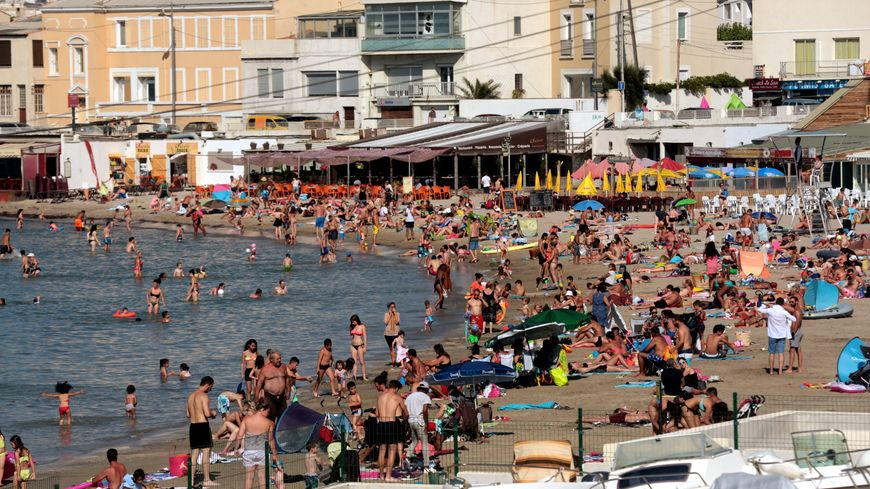
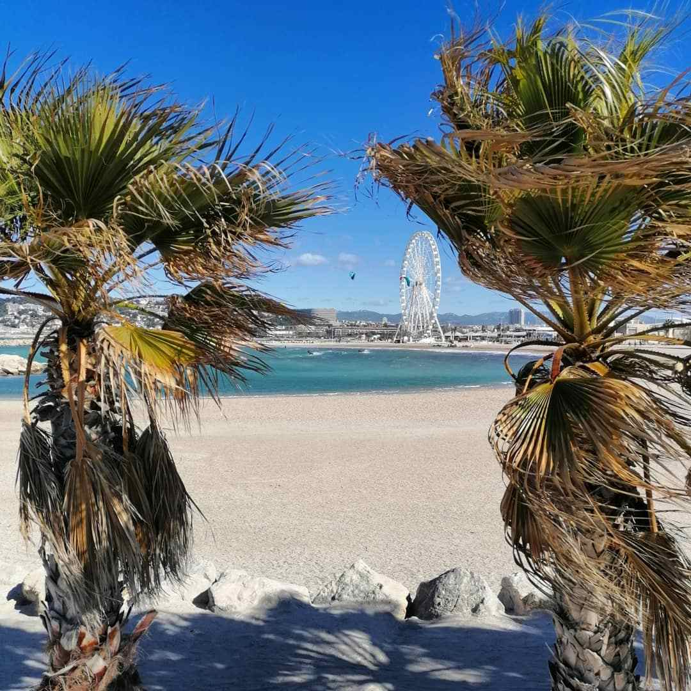
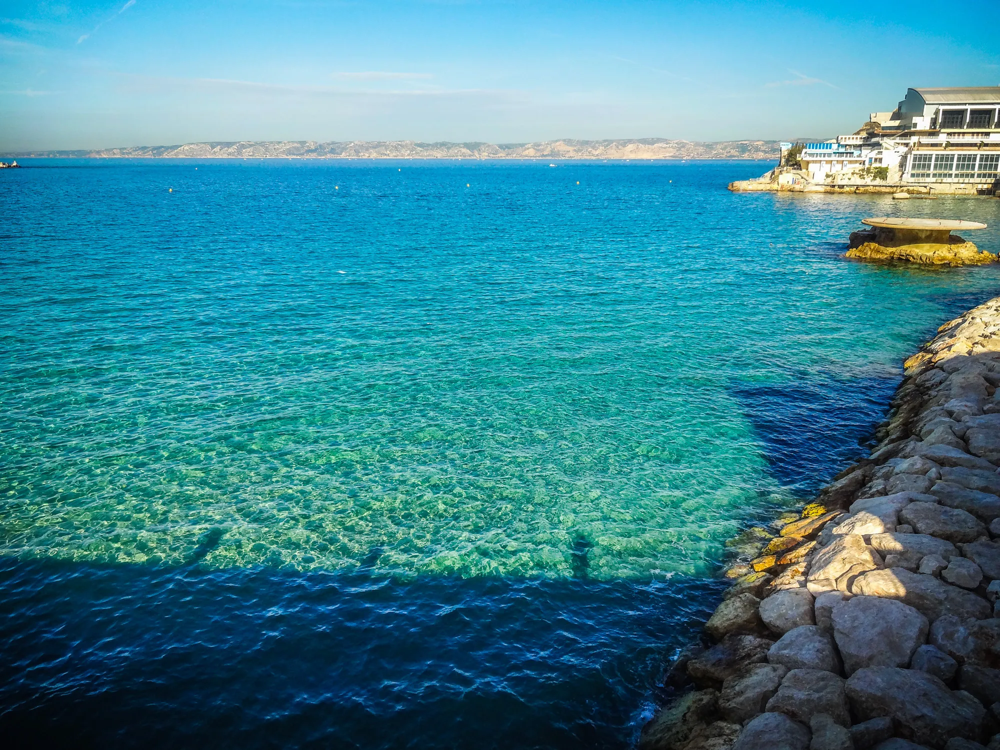

Les Plages de Marseille
La Plage du Prophéte

histoire :
La plage du Prophète est une des rares « vraie » plage de sable à Marseille. La construction de la digue date de 1894 et avait pour objectif
de faire obstacle à l'accumulation d'algues, dont la décomposition dégage une odeur nauséabonde. Ces algues sont encore là de nos jours.
Histoire :
Juste après le parc balnéaire du Prado se trouve la Pointe Rouge.
A proximité du petit port du même nom, qui propose de nombreuses activités nautiques comme la voile, plongée, aviron, kayak, se trouve la plage.
C’est la plus grande plage de Marseille, constituée de sable, elle est protégée des vents et reçoit un public familial populaire. En bordure se trouvent de nombreux restaurants, bars, pubs qui assurent le ravitaillement et l’ambiance. En été, la surveillance de la baignade est également assurée.
La plage de la Pointe Rouge
La Baie des Singes

Histoire :
Si l’alcôve idyllique est nommée Baie des Singes, c’est qu’il fut un lieu de contrebande où l’on demandait aux enfants d’être muets comme des singes.
La panorama est lunaire. Le toucher, crayeux. Le goût, poissonneux, si vous vous arrêtez au restaurant (coûteux) de la Baie des Singes.
La « mini-plage » bordée de cabanons se situe aux Goudes face à l’île Maïre, le vertigineux rocher torturé qui marque l’entrée de la baie de la cité phocéenne. Les Marseillais lui ont donné le surnom rêveur de « plage de bout du monde ». Elle est en effet difficilement accessible. La grève est étroite. Les baigneurs qui ont eu le courage de venir jusque-là s’y concentrent,
surtout durant les weekends. Autour de vous : des roches blanches, caractéristiques du massif des calanques.
Histoire :
Crées dans les années 70 pour aménager les kilomètres de littoral inexploités, les plages du Prado sont aujourd’hui devenues un lieu incontournable pour de nombreux marseillais et touristes. Les travaux du métro de l’époque produisant le remblais nécessaire à l’aménagement des 22 hectares pris sur la mer. Au final,
le parc balnéaire du Prado s’étend sur 26 hectares et 3.5 kilomètres de littoral et est fréquenté par plus de 3,5 millions de visiteurs par an.
C’est la plus grande plage de Marseille, même si on pourrait plus parler d’une succession de plages sur des kilomètres entre celle du David (ainsi nommée à cause de la statue éponyme), à la Vieille Chapelle. Chaque coin attire un public plus ou moins différent, mais l’essentiel est constitué d’habitués, de familles, et de plus jeunes.
Les immenses pelouses qui encadrent la mer sont le paradis des footeux du dimanche, des enfants comme des plus grands, ravis de pouvoir profiter d’un vaste espace de verdure à deux pas de la mer. Attention, car l’endroit est pris d’assaut l’été, étant le plus facile d’accès par les transports.
Mais il est possible de trouver des coins plus tranquilles que d’autres. N’hésitez pas à vous balader un peu avant de poser votre serviette pour la journée. Le Skatepark ou Bowl est reconnu dans le monde entier, et les amateurs de glisse s’y pressent en pèlerinage.
La Plage du Prado
La Plage des Catalans
Histoire :
C’est La plage la plus accessible quand on se trouve dans le centre de Marseille. Ce n’est pas la plus belle, ni celle qui a l’eau la plus bleue, mais elle est à 15 minutes à pied du Vieux Port et est idéale pour aller piquer une tête à l’improviste.
N’hésitez pas à dépasser les eaux et les foules stagnantes du bord pour profiter des eaux plus profondes, moins fréquentées et plus propres. La plage des Catalans est également connue pour ses terrains de Beach Volley qui attirent joueurs et spectateurs tout au long de l’année. Vous pourrez
flâner en regardant les parties endiablées en vous asseyant sur les bancs situés plus haut.
Attention ce petit00 endroit du bout du monde est très fréquenté durant la saison estivale, et peut se transformer en piscine noire de monde. Vous voila prévenus !